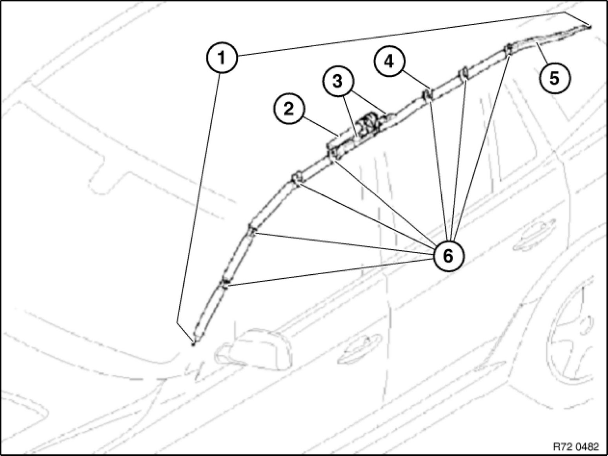
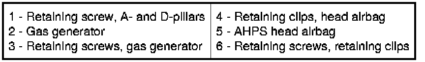
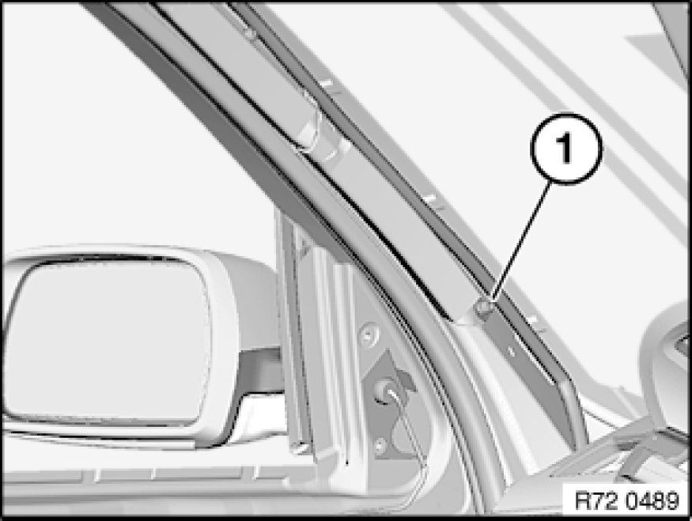
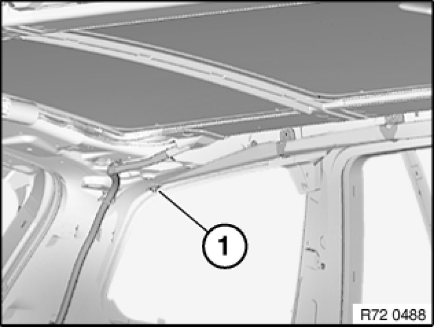
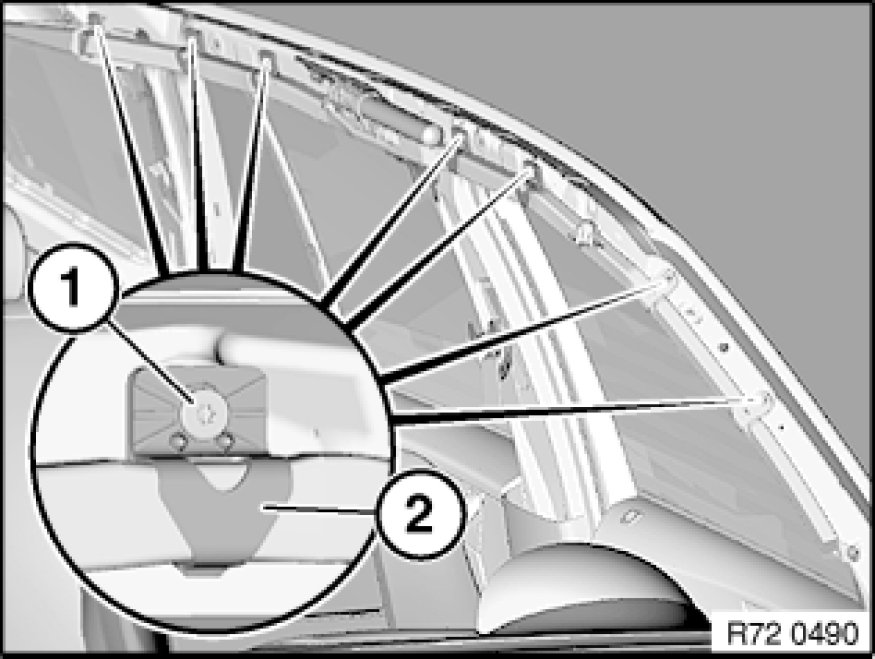
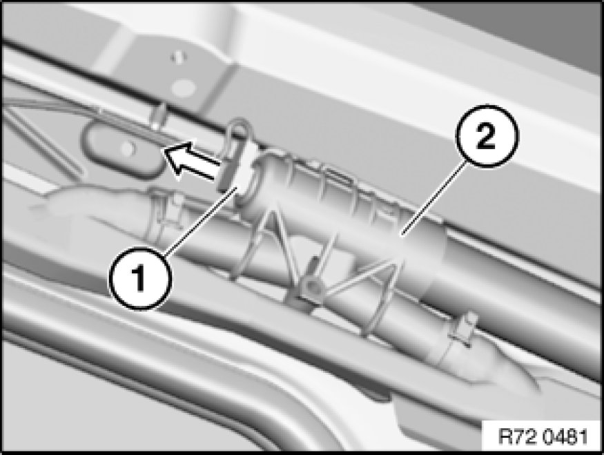
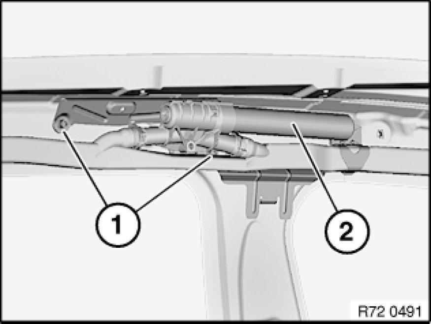

Removing and Installing/Replacing Left or Right AHPS2 Head Airbag (Version Without Slide/Tilt Sunroof)
72 12 045 - Removing and installing/replacing left or right AHPS2 head airbag (version without slide/tilt sunroof)

Warning!
Read and comply with safety regulations [1][2]Safety Regulations for Handling Components with Gas Generators for handling airbag modules and pyrotechnical belt tensioners.
Incorrect handling can activate airbag and cause injury.
The AHPS head airbag must be replaced if it is damaged during removal or installation.
A damaged AHPS head airbag exhibits an impaired protective function and in extreme cases loses its protective function altogether.

Necessary preliminary tasks:
- Remove headliner 51 44 002 Removing and Installing Roofliner (on Version Without Panorama Sunroof) (version without slide/tilt sunroof)
- Remove instrument panel trim 51 45 030 Removing and Installing Instrument Panel Trim

Installation Note:
- Microencapsulated screws (Loctite) must be replaced and may not be reused
- Screw connection must be completed within 20 mins. (start of curing)
- Microencapsulated screws must not be retightened
- Thread of nut must be cleaned beforehand in event of repeated use
Installation summary, retaining elements, AHPS head airbag:



Important!
When removing AHPS head airbag, do not damage
- AHPS head airbag
- Windscreen
- Retaining clips
- Trim panels

Release retaining screw (1) on A-pillar.
Tightening torque 72 12 4AZ Airbag Modules.
Note:
Screw is held in end fitting by locking washer.

Release rear retaining screw (1).
Tightening torque 72 12 4AZ Airbag Modules.
Note:
Screw is held in end fitting by locking washer.

Release screws (1) on retaining clips (2).
Tightening torque 72 12 3AZ Airbag Modules.

Unlock and disconnect Unlocking/Locking Airbag Plug Connections plug (1) for AHPS head airbag gas generator (2).

Release screws (1) on gas generator (2).
Tightening torque 72 12 2AZ Airbag Modules.
Remove complete AHPS head airbag with gas generator.
Note:
Procedure for cable repairs:
In event of visible damage to wiring harness, refer to 72 12 ... Repairing airbag cables Service and Repair.